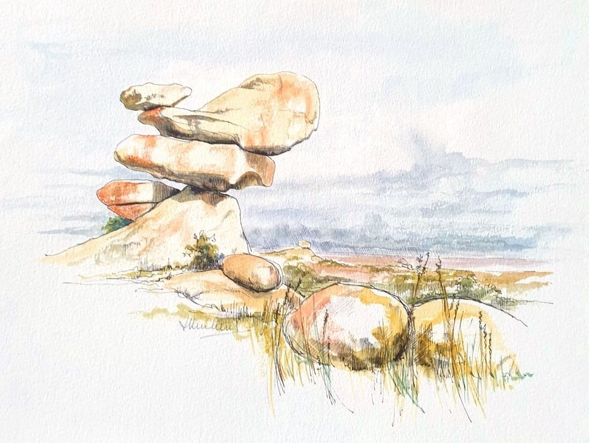

Balancing Rocks Zimbabwe
No. 8- Medium
- Ink and watercolour on paper
- Size
- 23 × 32 cm
- Year
- 1985
- Inspired by
- The south of Zimbabwe
- Price
- £175
These very famous balancing rocks in the south of Zimbabwe are typical of the granite rock formations in the south of the country, where I grew up. It was done in a nostalgic mood many years after leaving the country.
Ask about this paintingOr email enquiries@joanmullinsart.co.uk, quoting No. 8. UK only. Collection from Nantwich is free; UK postage is quoted when you enquire.